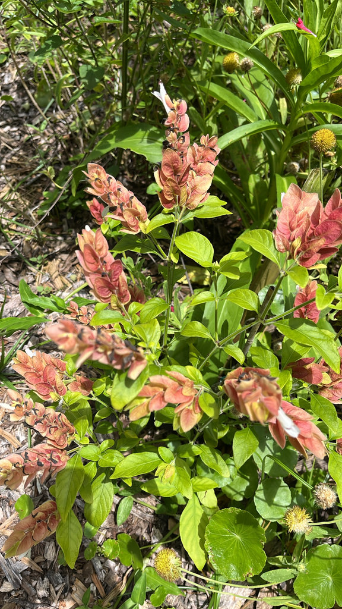

- Those colorful 'shrimp' are not the flowers. They're bracts — modified leaves. The actual flowers are small, white, and tubular, peeking out from between the bracts like a head poking out of a shell.
- The name 'False Hop' comes from the striking resemblance the overlapping bract chains bear to the seed cones of the hops plant used in brewing — an entirely unrelated species.
- The plant is named for American botanist Townshend Stith Brandegee (1843–1925), who collected plants extensively across Mexico and the American West — including the northeastern Mexican states where this shrub is at home.
- A single bract chain keeps growing, adding new bracts at the tip, until the whole spike eventually drops — meaning chains can reach nearly a foot long before they're done. And while the classic form runs salmon to rusty red, cultivars like 'Yellow Queen' flip the palette entirely to chartreuse-yellow.
Native to central and northeastern Mexico — including states such as Tamaulipas, San Luis Potosí, and Nuevo León — and ranging into Central America, where it grows in seasonally dry tropical forest. It has naturalized in parts of Florida and is now widely cultivated across subtropical and tropical gardens worldwide.
It arrived in Florida horticulture as an ornamental, valued for its near-continuous bloom season and reliable hummingbird appeal, and has since established itself in some naturalized populations in the state. In north and central Florida, a hard freeze will kill plants back to the ground, but established plants reliably resprout from the roots once warm weather returns.
- The Shrimp Plant belongs to the Acanthaceae — the acanthus family — a large and botanically fascinating group of roughly 2,500 tropical species, many of which have evolved tubular flowers fine-tuned for hummingbird or insect pollination. The genus Justicia alone contains around 600 species distributed across the world's tropics and warm subtropics. In Florida landscapes, J.
- brandegeeana stands out for sheer staying power: in frost-free conditions, it can produce flower spikes for up to ten months of the year.
- What you are actually looking at when you admire the 'flowers' is mostly bracts — leaf-like structures modified into vivid, overlapping scales that form the drooping shrimp-shaped spike. Bracts start out pale and deepen in color with more sun exposure, ranging from soft pink to deep rusty salmon.
- The true flower is tucked inside: small, white, tubular, and lipped — with mauve speckles on the lower lip and dark anthers. The whole arrangement is a hummingbird delivery system, positioning the nectar-reward precisely where the bird's head will contact the anthers.
The Shrimp Plant is a reliable hummingbird magnet in the Florida garden, and UF/IFAS specifically calls it a must-have for any hummingbird planting. The long tubular white flowers nestled inside the bracts are precisely shaped for a hovering bird, and because the plant blooms through most of the year in our climate, it provides nectar well outside the peak seasons of most other garden plants.
Bees and butterflies also visit the flowers regularly, drawn by the same nectar reward. The plant's extended bloom season is its real practical advantage: few ornamental shrubs of this size keep pollinators supplied as dependably through Florida's shoulder seasons.
Spreads by suckering at the base as well as by seed. In cultivation, it is most commonly propagated by stem cuttings, which root readily. Left to its own devices, the plant becomes leggy and brittle; cut back by one-third to one-half in late winter or early spring to keep growth dense and flowering strong.
Drooping terminal spikes of overlapping, heart-shaped bracts — reddish-brown, salmon, or pink — up to 4–5 inches long, enclosing small white tubular flowers with mauve-spotted lower lips. Bract chains continue to elongate from the tip and can approach 12 inches before dropping. Blooms nearly year-round in frost-free conditions.
Sprawling, spindly woody stems, lightly branched. Leaves oval, 1–3 inches long, soft green and slightly hairy (downy). Too much direct midday sun will bleach the bracts and scorch the leaves — afternoon shade is your friend in a Florida summer. (Note: creamy-speckled foliage is a trait of the specific 'Variegata' cultivar only, not the standard species.
Likewise, the mauve spots visible on the plant belong to the flower's lower lip — not the foliage; plain green leaves on the standard species are healthy leaves.)
The drooping, chain-like bract spikes are unmistakable — look for the overlapping reddish-brown or salmon scales curving downward like a hooked shrimp. Then look closely at the tip of each spike for the small white flower actually poking out: lipped, with purple-mauve spots on the lower lobe.
At the base of the plant, watch for new shoots emerging from the roots — this shrub spreads by suckering as well as seed.
This isn't a food plant — no part is established as edible, though the Huastec people of Mexico have used it medicinally. Don't eat it.
It isn't considered toxic to people or listed as poisonous, and isn't listed as toxic to dogs or cats. As always, discourage pets from chewing ornamentals.
NOMENCLATURE: Formerly placed in the genus Beloperone (as Beloperone guttata) and in the family Acanthaceae subfamilies under older classifications. The current accepted name is Justicia brandegeeana Wassh. & L.B.Sm. The misspelling 'brandegeana' (one 'e') is common in trade and on plant labels — the correct spelling has two e's before the 'a'.
The Royal Horticultural Society has awarded this plant its Award of Garden Merit.
- © Franky McArthur (CC-BY-NC), via iNaturalist